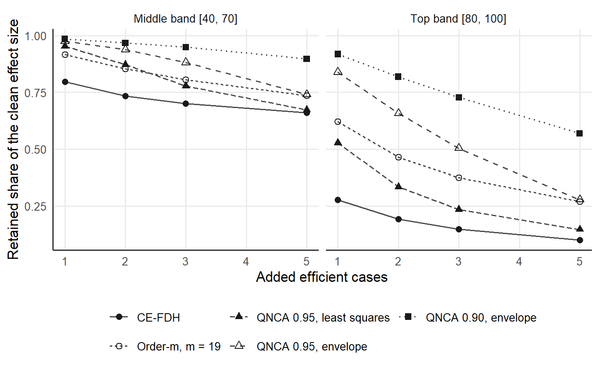

11 QNCA among frontier methods
QNCA estimates, for each outcome target y, a low type-1 quantile of the condition X among the cases that attain Y >= y. The tolerance pi in (0, 1] fixes the share 1 - pi of the successful cases that may fall below the reported requirement, and at pi = 1 the quantile is the minimum, the CE-FDH ceiling of Necessary Condition Analysis (NCA) (Dul 2016). Economic frontier methods use related operations on a related geometry, and the comparison shows the ancestry of the quantile construction together with the limits of what QNCA can borrow (Deja 2026b).
11.1 Free disposal hull, order-m and order-alpha
The free disposal hull (FDH) of nonparametric production analysis estimates the set of production possibilities from free disposability alone (Deprins et al. 1984). The CE-FDH ceiling of NCA adapts the step geometry of the FDH to the upper-left empty zone of a necessity scatter (Dul 2016). The link is geometric: a production frontier measures efficiency against a feasible technology, whereas the CE-FDH ceiling marks a requirement that is necessary for the outcome target and leaves attainment above the requirement open.
Partial frontiers reduce the dependence of a production boundary on the observations that envelop the data. The order-m frontier uses the expected best performance among m units drawn at random from the units that use at most the inputs of the evaluated unit (Cazals et al. 2002). The order-alpha frontier uses a conditional production quantile and is the closer structural analogue to QNCA (Aragon et al. 2005). Both evaluate production performance against a technology, whereas QNCA asks for the condition level among the cases attaining Y >= y, imposes the monotone necessity restriction and keeps the bottleneck and empty-zone reading of NCA. Table 11.1 places the estimands side by side.
| Family | Target object | Treatment of extremes | Relationship to QNCA |
|---|---|---|---|
| FDH and CE-FDH | Extreme production boundary; NCA running minimum | One envelope case may define a segment | CE-FDH is the strict member of QNCA; the substantive readings differ |
| Order-m | Conditional expected maximum of m draws |
Replaces the full extreme by a partial expected frontier | Partial-frontier antecedent built on an expected extreme |
| Order-alpha | Conditional production quantile | Selects a probability-indexed partial boundary | Closest economic analogue, with a production-efficiency estimand |
| QNCA | Lower condition quantile among cases attaining Y >= y
|
Allows a boundary-exception share fixed in advance | Necessity bottleneck; monotone envelope; CE-FDH as strict member |
Later frontier work supplies tools and marks the borders of the analogy. Simar and Wilson (2015) review inference for nonparametric efficiency and partial frontiers, and smooth order-alpha estimation improves regularity under production frontier assumptions (Martins-Filho and Yao 2008). Comparative work shows that the scores of data envelopment analysis, FDH, order-m and order-alpha answer different questions (da Silva et al. 2016). Extreme value theory gives inference for FDH boundaries (Daouia et al. 2010), probability-weighted expected maxima form another partial frontier (Daouia et al. 2021), and deconvolution addresses noisy frontier data under explicit assumptions about measurement error (Daouia et al. 2020). Standard errors for QNCA would need separate derivations, because QNCA uses nested conditioning sets, a monotone envelope and the area functional of NCA (Deja 2026b).
11.2 The conditioning direction
Shape-constrained quantile and expectile methods impose the restrictions of production theory while the methods estimate a conditional surface of the outcome (Dai et al. 2023). Response quantile regression models a quantile of the outcome given the condition (Koenker and Bassett 1978; Koenker 2005). QNCA conditions the other way round: QNCA estimates the required X among the cases that attain an outcome target and uses the monotone envelope to make the bottlenecks non-decreasing in the target. Classification with nonconvex pairwise frontiers shows continued interest in the FDH geometry (Jin et al. 2026). A statement about the predictive performance of QNCA or about the validity of the QNCA diagnostics would need a separate comparison on held-out data (Deja 2026b).
11.3 Resistance and breakdown
Conditional quantile frontiers are qualitatively robust and have a bounded influence function (Daouia and Ruiz-Gazen 2006), and conditional quantile frontiers reach a higher breakdown value than order-m frontiers, which one perturbation can break (Daouia and Gijbels 2011). In the necessity orientation, the order-m analogue is the expected minimum of m draws with replacement from the condition values of the attaining cases, and the expected minimum moves with every added case below the frontier. QNCA at pi < 1 rests on a rank. At a target with k attaining cases, the frontier selects the order statistic of rank h = max(1, ceiling(k * (1 - pi))), and c added cases lower the raw frontier at most to the original order statistic of rank h - c whenever h > c (Deja 2026b). At pi = 0.95, one added case is absorbed wherever more than 20 original cases attain the target.
The synthetic dataset of 200 cases of the qnca repository, with a condition and an outcome on a scale from 0 to 100, receives up to three efficient cases at the condition values 4, 6 and 8 and the outcome values 45, 55 and 65. The function qnca_sensitivity() recomputes d_pi on the fixed scope of the original sample, and a short function computes the order-m frontier with m = 19, the expected minimum of 19 draws, made monotone by the envelope.
library(qnca)
d <- read.csv("https://raw.githubusercontent.com/MarekDejaUJ/qnca/main/data/qnca_dataset_n200.csv")
order_m_frontier <- function(X, Y, m, y_grid, x_max = 100) {
phi <- vapply(y_grid, function(y) {
x <- sort(X[Y >= y]); k <- length(x); i <- seq_len(k)
if (k == 0) x_max else sum(x * (((k - i + 1) / k)^m - ((k - i) / k)^m))
}, numeric(1))
cummax(phi)
}
added <- cbind(X = c(4, 6, 8), Y = c(45, 55, 65))
curve <- qnca_sensitivity(d$X, d$Y, points = added, counts = 0:3, scope = c(0, 100, 0, 100))
grid <- seq(0, 100, length.out = 50)
d_order_m <- vapply(0:3, function(c) {
X <- c(d$X, added[seq_len(c), "X"]); Y <- c(d$Y, added[seq_len(c), "Y"])
qnca_d(order_m_frontier(X, Y, 19, grid), grid, x_min = 0, scope = 100 * 100)
}, numeric(1))
effects <- cbind(added = 0:3, curve$d, order_m_19 = d_order_m)
colnames(effects)[2:4] <- c("pi_1.00", "pi_0.95", "pi_0.90")
round(effects, 4)
#> added pi_1.00 pi_0.95 pi_0.90 order_m_19
#> [1,] 0 0.4941 0.5406 0.5916 0.5406
#> [2,] 1 0.4227 0.5300 0.5828 0.5059
#> [3,] 2 0.3901 0.5082 0.5732 0.4689
#> [4,] 3 0.3427 0.4317 0.5502 0.4180
retained <- cbind(added = 0:3, curve$retention, order_m_19 = d_order_m / d_order_m[1])
colnames(retained)[2:4] <- c("pi_1.00", "pi_0.95", "pi_0.90")
round(retained, 3)
#> added pi_1.00 pi_0.95 pi_0.90 order_m_19
#> [1,] 0 1.000 1.000 1.000 1.000
#> [2,] 1 0.855 0.980 0.985 0.936
#> [3,] 2 0.789 0.940 0.969 0.867
#> [4,] 3 0.694 0.798 0.930 0.773
sapply(added[, "Y"], function(y) sum(d$Y >= y))
#> [1] 32 25 11On the clean sample, the order-m effect size and the effect size at pi = 0.95 both round to 0.541, so the two partial frontiers sit near the same lower five percent of the attaining cases. With one added case, the strict member keeps 0.855 of the clean effect size, the order-m frontier keeps 0.936, and QNCA keeps 0.980 at pi = 0.95 and 0.985 at pi = 0.90. The original sample has 32, 25 and 11 cases at or above the outcome values 45, 55 and 65. The first two added cases therefore fall where the pi = 0.95 member absorbs one case, and the third falls at a target that 11 cases attain, too few to resolve the tolerance. With three added cases, the strict member keeps 0.694, the order-m frontier 0.773, the pi = 0.95 member 0.798 and the pi = 0.90 member 0.930. The protection of a tolerant member therefore grows with the attaining count and with the exception share.
11.4 The resistance comparison of the article
The article compares QNCA with the CE-FDH, CR-FDH and quantile regression ceilings of the NCA package (Dul 2026), with screening followed by deletion in the order of the NCA outlier screen, and with the order-m frontier at m = 19 (Deja 2026b). Samples come from a linear ceiling and from the concave ceiling 10 * sqrt(x) on the fixed scope [0, 100] x [0, 100], and one to five efficient cases with X in [0, 10] enter a middle band [40, 70] or a top band [80, 100] of the outcome, with 500 replicates per cell. The replication archive stores the mean share of the clean effect size that each method keeps.
ret <- read.csv("https://raw.githubusercontent.com/MarekDejaUJ/qnca/main/replication/results/summary_retention.csv")
methods <- c("CE-FDH", "CR-FDH", "QR", "Screen 1% rule", "Order-m 19",
"QNCA least squares 0.95", "QNCA envelope 0.95", "QNCA envelope 0.9")
n300 <- subset(ret, n == 300 & level %in% c(1, 3) & label %in% methods)
n300$cell <- paste(ifelse(n300$gen == "G1", "linear", "concave"), n300$band, n300$level)
wide <- reshape(n300[, c("label", "cell", "mean_retention")], idvar = "label",
timevar = "cell", direction = "wide")
wide <- wide[match(methods, wide$label), ]
names(wide) <- sub("mean_retention.", "", names(wide), fixed = TRUE)
knitr::kable(wide, digits = 2, row.names = FALSE,
caption = "Mean share of the clean effect size retained at n = 300 after one or three efficient cases enter the middle or the top band of the outcome, for the linear and the concave ceiling, 500 replicates per cell; screening is compared with the clean CE-FDH effect size before any deletion.")| label | linear mid 1 | linear mid 3 | linear top 1 | linear top 3 | concave mid 1 | concave mid 3 | concave top 1 | concave top 3 |
|---|---|---|---|---|---|---|---|---|
| CE-FDH | 0.80 | 0.70 | 0.28 | 0.15 | 0.85 | 0.76 | 0.34 | 0.18 |
| CR-FDH | 0.93 | 0.84 | 0.48 | 0.21 | 0.98 | 0.90 | 0.70 | 0.34 |
| QR | 1.00 | 0.98 | 1.00 | 0.98 | 0.99 | 0.96 | 0.99 | 0.96 |
| Screen 1% rule | 1.06 | 1.05 | 1.06 | 1.06 | 1.11 | 1.10 | 1.11 | 1.10 |
| Order-m 19 | 0.92 | 0.81 | 0.62 | 0.37 | 0.94 | 0.85 | 0.65 | 0.41 |
| QNCA least squares 0.95 | 0.95 | 0.78 | 0.53 | 0.24 | 0.97 | 0.87 | 0.59 | 0.29 |
| QNCA envelope 0.95 | 0.97 | 0.88 | 0.84 | 0.50 | 0.98 | 0.91 | 0.84 | 0.51 |
| QNCA envelope 0.9 | 0.98 | 0.95 | 0.92 | 0.73 | 0.99 | 0.95 | 0.92 | 0.72 |
Where the added cases fall in the middle band, enough cases attain most of the affected targets to resolve the tolerance. One added case leaves CE-FDH with 0.80 of the effect size on the linear ceiling and 0.85 on the concave ceiling, whereas the pi = 0.95 member keeps 0.97 and 0.98. With three added cases on the linear ceiling, CE-FDH keeps 0.70, the order-m frontier 0.81, the pi = 0.95 member 0.88 and the pi = 0.90 member 0.95. CR-FDH, the regression line through the CE-FDH corner points, keeps 0.93 and 0.84, because the added cases become corner points of the line.
The top band marks where the protection ends. At n = 300 few cases attain the targets above 70, so added cases there lie beyond the last resolved target, and the envelope holds the requirement reached at the lower targets (Deja 2026b). One top-band case on the linear ceiling leaves CE-FDH with 0.28 and the pi = 0.95 member with 0.84; three cases leave 0.15 and 0.50, and the pi = 0.90 member keeps 0.73. Least squares pooling of the same raw frontier keeps 0.53 and 0.24, because the pooling averages the unresolved top targets into the resolved ones.
The quantile regression ceiling keeps at least 0.96 in every cell, because one line serves every target and counts the exception share over the whole sample. The same construction tips in small samples and imposes a straight shape on a concave boundary (Deja 2026b). Screening followed by deletion keeps more than the clean effect size, from 1.05 to 1.06 on the linear ceiling and from 1.10 to 1.11 on the concave ceiling, because the screen removes genuine boundary cases together with the added ones. NCA guidance ties the removal of a case to evidence that the case is an error or comes from another population (Dul et al. 2023), and the tolerance path reports the same dependence on efficient cases and keeps every case.
shown <- c("CE-FDH", "Order-m 19", "QNCA least squares 0.95", "QNCA envelope 0.95", "QNCA envelope 0.9")
curves <- subset(ret, n == 300 & gen == "G1" & band != "clean" & label %in% shown)
curves$band <- factor(curves$band, levels = c("mid", "top"),
labels = c("Middle band [40, 70]", "Top band [80, 100]"))
curves$label <- factor(curves$label, levels = shown,
labels = c("CE-FDH", "Order-m, m = 19", "QNCA 0.95, least squares",
"QNCA 0.95, envelope", "QNCA 0.90, envelope"))
ggplot(curves, aes(level, mean_retention, linetype = label, shape = label)) +
geom_line(colour = "grey30") +
geom_point(colour = "grey10", size = 2) +
facet_wrap(~ band) +
scale_shape_manual(values = c(16, 1, 17, 2, 15)) +
labs(x = "Added efficient cases", y = "Retained share of the clean effect size",
linetype = NULL, shape = NULL) +
theme(legend.position = "bottom") +
guides(linetype = guide_legend(nrow = 2), shape = guide_legend(nrow = 2))
Figure 11.1: Mean share of the clean effect size retained as one to five efficient cases enter the middle band [40, 70] or the top band [80, 100] of the outcome, linear ceiling, n = 300, 500 replicates per point, for CE-FDH, the order-m frontier with m = 19 and QNCA at pi = 0.95 and 0.90 with the monotone envelope and at pi = 0.95 with least squares pooling.
11.5 The same call in Python and Julia
The Python package qnca and the Julia package QuantileNecessity give the same effect sizes and retained shares for the three added cases.
from urllib.request import urlopen
import numpy as np
from qnca import qnca_sensitivity
url = "https://raw.githubusercontent.com/MarekDejaUJ/qnca/main/data/qnca_dataset_n200.csv"
X, Y = np.loadtxt(urlopen(url), delimiter=",", skiprows=1, unpack=True)
added = np.array([[4.0, 45.0], [6.0, 55.0], [8.0, 65.0]])
curve = qnca_sensitivity(X, Y, points=added, counts=range(4), scope=(0, 100, 0, 100))
print(np.round(curve.d, 4))
print(np.round(curve.retention, 3))
#> [[0.4941 0.5406 0.5916]
#> [0.4227 0.53 0.5828]
#> [0.3901 0.5082 0.5732]
#> [0.3427 0.4317 0.5502]]
#> [[1. 1. 1. ]
#> [0.855 0.98 0.985]
#> [0.789 0.94 0.969]
#> [0.694 0.798 0.93 ]]using QuantileNecessity, Downloads, DelimitedFiles
url = "https://raw.githubusercontent.com/MarekDejaUJ/qnca/main/data/qnca_dataset_n200.csv"
data = readdlm(Downloads.download(url), ',', Float64; skipstart = 1)
X, Y = data[:, 1], data[:, 2]
added = [(4.0, 45.0), (6.0, 55.0), (8.0, 65.0)]
curve = qnca_sensitivity(X, Y; points = added, counts = 0:3, scope = (0, 100, 0, 100))
println(round.(curve.d; digits = 4))
println(round.(curve.retention; digits = 3))
#> [0.4941 0.5406 0.5916; 0.4227 0.53 0.5828; 0.3901 0.5082 0.5732; 0.3427 0.4317 0.5502]
#> [1.0 1.0 1.0; 0.855 0.98 0.985; 0.789 0.94 0.969; 0.694 0.798 0.93]QNCA shares with the partial frontiers of production analysis the aim of a boundary that rests on more than a few extreme cases, and QNCA keeps the necessity question, the bottleneck and the CE-FDH anchor.